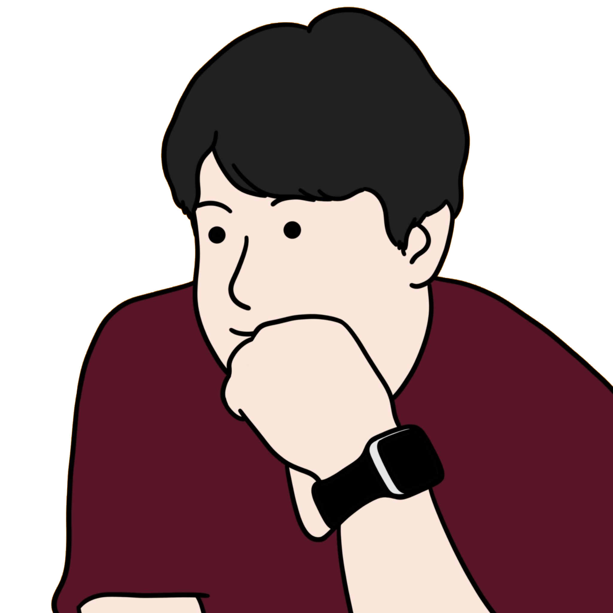

Title
Sub-Title
Introduction
Instructor Introduction
Chungil Chae
.pull-left[ ] .pull-right[ - (채충일, 蔡忠壹, Chad), cchae@kean.edu / cchae@wku.edu.cn, chadchae.github.io - Wenzhou-Kean University - Management, Business Analytics - Assistant Professor - Research Interest - Social Network Analysis - Human Behavior - Knowledge Sharing - Learning Experience / Learning Path]
test
.footnote[[1] Text associated with footnote 1.]
References
Sharda, R., D. Delen, and E. Turban (2017). Business intelligence, analytics, and data science: a managerial perspective. Pearson.
Shmueli, G., P. C. Bruce, I. Yahav, N. R. Patel, and K. C. Lichtendahl Jr (2017). Data mining for business analytics: concepts, techniques, and applications in R. John Wiley & Sons.